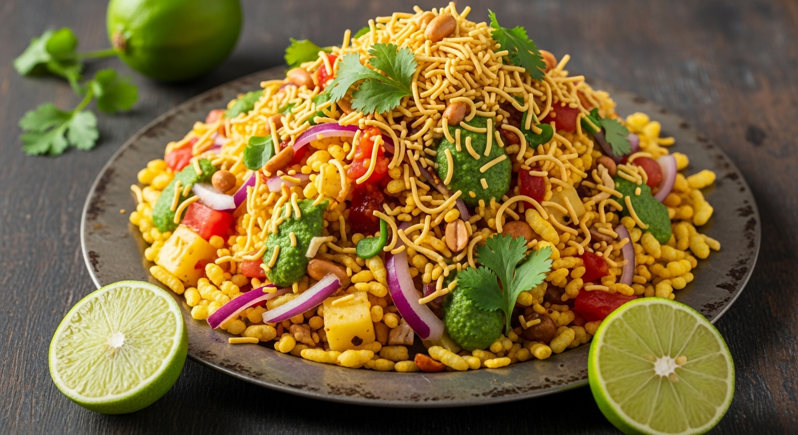

Bhel Puri

Description
Bhel Puri is a popular Indian street food snack made with puffed rice, crunchy sev, fresh vegetables, chutneys, and spices. It has a perfect mix of spicy, tangy, sweet, and crunchy flavors. It’s light, refreshing, and best eaten immediately after mixing so it stays crispy.
Ingredients
- 3 cups puffed rice
- 1/2 cup sev
- 1 small onion, finely chopped
- 1 small tomato, finely chopped
- 1 small boiled potato, diced
- 2 tbsp roasted peanuts
- 2 tbsp fresh coriander, chopped
- 1 green chili, finely chopped
- 1 tsp chaat masala
- 1/2 tsp roasted cumin powder
- Salt to taste
- Juice of 1 lemon
- 3 tbsp tamarind chutney
- 2 tbsp mint coriander chutney
Steps
- Add puffed rice to a large mixing bowl.
- Add onions, tomatoes, boiled potatoes, peanuts, green chili, and coriander.
- Add tamarind chutney and green chutney.
- Sprinkle chaat masala, cumin powder, and salt.
- Squeeze fresh lemon juice.
- Mix everything quickly.
- Top with sev before serving.
Homepage